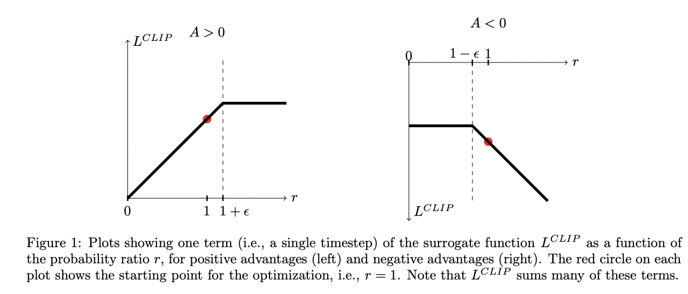

Proximal Policy Optimization (PPO) is a popular algorithm in reinforcement learning (RL), used to solve sequential decision-making problems. It is designed to improve upon prior policy gradient methods by providing a stable and efficient way to train RL models.
In RL, the training data distribution is highly dependent on the current policy. This introduces challenges like:
PPO introduces the concept of a clipped surrogate objective to restrict updates to the policy:
\[ L^{CLIP}(\theta) = \mathbb{E}_t \left[ \min \left( r_t(\theta) A_t, \text{clip}(r_t(\theta), 1-\epsilon, 1+\epsilon) A_t \right) \right] \]
Here:
The PPO algorithm builds upon several key concepts:
The policy gradient loss is defined as:
\[ L^{PG}(\theta) = \mathbb{E}_t \left[ \log \pi_\theta(a_t|s_t) A_t \right] \]
Here, \(A_t\) represents the advantage function, which is calculated as:
\[ A_t = \sum_{k=0}^{T} \gamma^k r_{t+k} - V(s_t) \]
Where:
The value function approximates the expected return from a given state:
\[ V(s_t) = \mathbb{E}[R_t|s_t] \]
Where \(R_t\) is the discounted return:
\[ R_t = \sum_{k=0}^{T} \gamma^k r_{t+k} \]
The clipped surrogate objective is designed to stabilize training:
\[ L^{CLIP}(\theta) = \mathbb{E}_t \left[ \min \left( r_t(\theta) A_t, \text{clip}(r_t(\theta), 1-\epsilon, 1+\epsilon) A_t \right) \right] \]
The figure below visualizes the clipping mechanism for positive (\(A > 0\)) and negative (\(A < 0\)) advantages:
While Trust Region Policy Optimization (TRPO) and PPO are similar in purpose, PPO simplifies the process by avoiding complex constraints. The clipping mechanism in PPO ensures that the policy updates remain within a stable region without the computational overhead of TRPO.
The final loss function in PPO combines multiple terms:
\[ L_t^{PPO}(\theta) = \mathbb{E}_t \left[ L_t^{CLIP}(\theta) - c_1 L_t^{VF}(\theta) + c_2 S[\pi_\theta](s_t) \right] \]
\[ H(\pi) = -\sum_i p_i \log_2(p_i) \]
Here, entropy measures the unpredictability of the policy's outcome, ensuring diverse action selection.
\(c_1\) and \(c_2\) are hyperparameters controlling the contributions of the value function and entropy terms.
Here are some valuable resources to dive deeper into PPO:
This article is a work in progress and will be updated with more details on PPO, including practical implementation tips and examples.